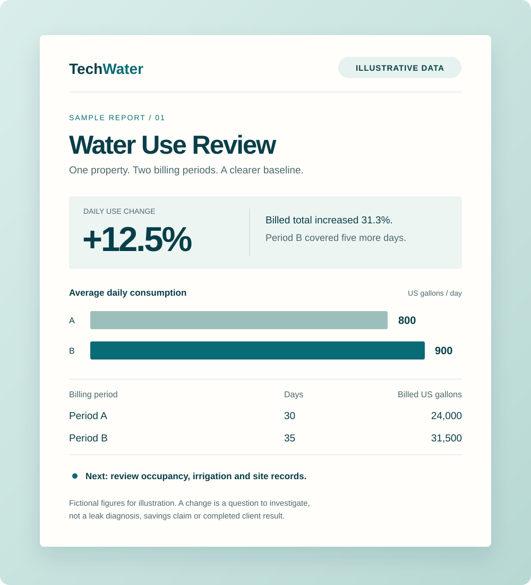

Small commercial portfolios
Property managers overseeing a handful of offices, retail locations or mixed-use buildings with separate water records.
Start with the data you already have. TechWater is a reporting concept for property teams that want to understand billed water use, investigate changes and prioritize practical follow-up.
Service design stage. Pilot availability and scope are still being defined.

A longer billing period, a new tenant, landscape irrigation or a faulty fixture can all change a property’s water use. Looking at the bill total alone makes it difficult to know what deserves attention.
TechWater’s first proposed product is a monthly review built from client-supplied bills or meter exports. It would normalize records by billing duration, document context and flag questions for the property team. Connected sensors can wait until the reporting workflow earns its place.
Property managers overseeing a handful of offices, retail locations or mixed-use buildings with separate water records.
Operators who can gather bills and investigate flagged changes with their maintenance providers.
Professionals interested in a clearer data handoff before a site visit or equipment assessment.
A proposed reporting pilot for a small set of properties with readable billing history, a designated owner and a practical way to investigate changes.
Proposed scope · Not yet bookableRecord period dates, units, billed consumption and gaps. Keep unit conversions and source records traceable.
Compare daily average usage across periods, with notes for occupancy, seasonality and property changes.
Separate data questions, site checks and specialist assessments. Assign the next step and record the outcome.
Collect permitted bill copies or exports, identify meters and units, and document which spaces or systems each account covers.
Compare periods on a consistent basis and add known occupancy or operating changes. Flag patterns as questions rather than diagnoses.
Have the property team or a qualified specialist check the site. Record what was found before deciding whether monitoring hardware is justified.
Period A covers 30 days and 24,000 US gallons. Period B covers 35 days and 31,500 US gallons. Compare the billed totals, then switch to a daily average to account for the extra days.
The daily increase still needs context. Check occupancy, irrigation and site records before assigning a cause.
Fictional figures. This example explains the method; it does not establish a leak, savings or a client result.
A focused service should earn the right to grow. These are proposed validation milestones, not completed achievements or enrollment promises.
Proposed discovery: work with 3 property operators to understand bill access, units and common data gaps.
Test up to 10 properties over 3 reporting cycles, with permission to use records and a named follow-up owner.
Track usable records, explained flags and completed site checks. Conservation savings and leak-detection performance are not claimed.
No. The initial concept reviews periodic records. It cannot provide real-time leak alerts, emergency protection or automatic shutoff.
No. Consumption records do not establish water quality or potability. Those questions require appropriate testing and qualified advice.
No hardware is proposed for the first reporting pilot. Future integrations would depend on access, compatibility and a demonstrated need.
An initial inquiry should include only a general portfolio description. Before a pilot, data permissions, transfer, access and retention would need to be agreed; do not send credentials or unredacted account identifiers now.
Tell us what records you have and what you are trying to understand. We are shaping a reporting pilot with property teams and specialists.
Prefer email? josephjilovec@pm.me
Or use the studio contact page ↗